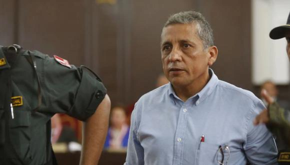

El etnocacerista Antauro Humala, condenado a 19 años de prisión por la toma de una comisaría
en Andahuaylas en el denominado ‘Andahuaylazo’, expresó su respaldo al candidato
presidencial de Perú Libre, Pedro Castillo, en miras a la segunda vuelta electoral del 6 de enero.
Dicho apoyo lo realizó a través de dos cartas que envió desde prisión y las cuales fueron
difundidas por diario Correo. Las dos misivas fueron compartidas por la esposa
de Humala, Ina Andrade, y estas fueron enviadas después de la primera jornada
electoral del 11 de abril, específicamente los días 14 y 15 de abril.
“Mi felicitación por su performarce enesta primera vuelta que constituye un triunfo aún
parcial de la causa patriótica del pueblo peruano. (...) Particularmente, a nombre de mi
familia y propio, le agradezco el nombre gesto de proponer mi indulto. Al respecto [...] adjunto a
esta carta una ayuda memoria”, indica la carta del 14 de abril luego de extender su felicitación
al candidato de Perú Libre por los resultados de las elecciones en primera vuelta.
Como se recuerda, el 12 de abril Pedro Castillo aseguró que indultará a Antauro Humala
si es elegido presidente.
Comunicación previa
En las cartas, también se precisa que el condenado se comunicó vía telefónica con
Pedro Castillo con anterioridad y que le agradeció haber planteado la posibilidad de
indultarlo si llega a ganar las elecciones.
“Ambos, estimado Pedro, convergemos patrióticamente y por lo que pude concluir
de los breves diálogos telefónicos que tuvimos, pero más por su performance
dirigencial/magisterial de lucha, es que la gesta revolucionaria yace en sus manos”,
añadió Antauro Humala, quien ofrece su “ayuda y colaboración” en lo que esté en su alcance.
“Estoy seguro que en libertad esa ayuda será multiplicada, más aún considerando las
próximas lides electorales”, mencionó.
05/05/2021